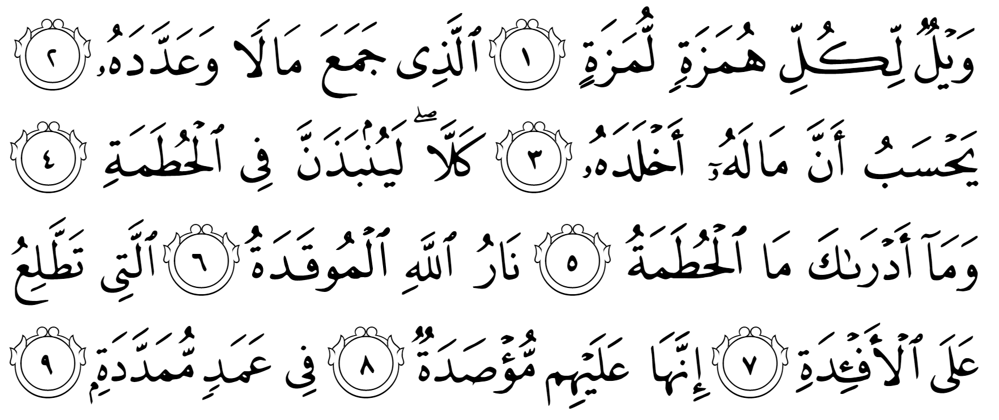

যারা পেছনে কথা লাগায়, সামনাসামনি অপমান করে —এরা সব শেষ হয়ে যাক। যে সম্পদ জমা করে গুণেগুণে রেখে মনে করে যে, তার সম্পদ তাকে অমর করে রাখবে। কখনই না! তাকে ছুড়ে ফেলা হবে এক চূর্ণবিচূর্ণকারীর ভেতরে। জানো সেটা কী? সেটা আল্লাহর আগুন, লেলিহান শিখা। এটা মানুষের হৃদয়-মনকে জ্বালিয়ে দিয়ে আসে। এটা তাদের উপর ঘিরে আসবে। উঁচু উঁচু থামে। —আল-হুমাযাহ
হুমাযাহ হচ্ছে কারও পেছনে কথা লাগানো, গীবত করা। আর লুমাযাহ হচ্ছে কাউকে সামনা-সামনি দোষ ধরে অপমান করা, বাজে আচরণ করা।[৫] কিছু উদাহরণ দেই—
ফোন এসেছে। ওপাশ থেকে বলছে, “ভাবী, কেমন আছেন? আপনাকে অনেকদিন ফোন করে পাই না।” ভাবী উত্তর দিলেন, “আমার ফোনটা নষ্ট ছিল। ঠিক করতে দিয়েছিলাম।” ওপাশ থেকে, “ঠিক করতে? কেন ভাইসাহেব কি আপনাকে নতুন ফোন কিনে দেয় না? আজকাল সবার হাতে আমি-ফোন ৭। আমাকে ও নতুন মডেল বের হলেই কিনে দেয়। আপনারটা তো বোধহয় এখনও আমি-ফোন ৪ তাই না?” ভাবী বললেন, “না, না, অবশ্যই দেয়। আমি নিজেই কিনি না। আগেরটা তো চলছেই।” ওপাশ থেকে, “এটা কেমন কথা হলো? আপনি ঘরের সব কাজ করেন। বাচ্চাদের পালেন। আবার আপনাকে ভাঙ্গা ফোনও চালাতে হবে? ভাই মনে হচ্ছে আপনাকে ঠিকমতো কদর করেন না।”
ব্যাস, ভাবীর মাথায় ঢুকে গেলো, “ভাই আপনাকে ঠিকমতো কদর করেন না।” প্রথমে একটু মন খারাপ হলো। তারপর অভিমান। অভিমান বাড়তে বাড়তে রাগে পরিণত হলো। রাগ থেকে ঘৃণা। সন্ধ্যায় স্বামী যখন ঘরে ঢুকল, তখন থমথমে অবস্থা। স্বামী যখন বলল, “ইয়ে, খুব ক্ষুধা লেগেছে, একটু নাস্তা দেবে?”, সাথে সাথে প্রচণ্ড বিস্ফোরণ!
—ফোন যে করেছিল, সে হচ্ছে হুমাযাহ। এরা মানুষে মানুষে কথা লাগায়। কানা-ঘুষা করে। অন্যের চরকায় তেল দেওয়া হচ্ছে এদের জীবিকা। এরা তাদের লিকলিকে জিভ দিয়ে অন্যের অন্তরে বিষ ঢেলে দেয়।
স্ত্রী গরমে ঘেমে অনেক সময় নিয়ে চা-নাস্তা বানিয়ে নিয়ে এসেছে। শ্বশুর, শাশুড়ি সবাই বসে খাচ্ছে। স্বামী চায়ে চুমুক দিয়ে বিরক্ত হয়ে বলছে, “নাহ, এখনও তুমি মা’র মত চা বানাতে শিখলে না। কতবার বললাম মা’র কাছ থেকে দেখো কতখানি লিকার দিতে হয়। মা! ওকে দেখিয়ে দিয়েন তো কীভাবে চা বানাতে হয়।” — এ হচ্ছে লুমাযাহ। এরা সুযোগ পেলেই মানুষের মুখের উপর তার বদনাম করে। কারও কোনো দোষ ধরার সুযোগ পেলে সহজে ছেড়ে দেয় না। সারাদিন একে ধমকানো, ওকে খোঁচা মারা, একে গালি দেওয়া, ওকে ব্যঙ্গ করা, এগুলো হচ্ছে এদের স্বভাব। এদের নিজেদের দোষের কোনো শেষ নেই। নিজের দোষ ঢাকার জন্য এরা সবসময় অন্যের দোষ নিয়ে ব্যস্ত থাকে। এদের জিভ হচ্ছে একটা ধারালো অস্ত্র। এই অস্ত্র দিয়ে সারাদিন এরা একের পর এক মানুষের হৃদয় ক্ষতবিক্ষত করতে থাকে।
আত্মীয় বেড়াতে এসেছে। গল্প করার ফাঁকে জিজ্ঞেস করলো, “আপনার মেয়ে কেমন আছে? ওর বাচ্চাগুলো ভালো আছে?” মা উত্তর দিলেন, “গত সপ্তাহে শুনলাম ওরা অসুস্থ। দেখি শুক্রবারে ফোন করলে বুঝতে পারবো কী অবস্থা?” আত্মীয় অবাক হয়ে বললেন, “শুক্রবারে? আপনার মেয়ে প্রতিদিন আপনাকে ফোন করে না? আমার মেয়ে প্রতিদিন সকালে ফোন করে সবার আগে আমার খোঁজ নেয়। আপনি এত কষ্ট করে মেয়ে বড় করে বিয়ে দিলেন, আর মেয়েটা আপনাকে দিনে একটা ফোনও করতে পারে না?” মা আমতা আমতা করে বললেন, “না, না, ব্যাপারটা সেরকম না। ও ঘর-সংসার, চাকরি নিয়ে অনেক ব্যস্ত থাকে। প্রতিদিন কি আর ফোনে কথা বলা যায়?” আত্মীয় তার নিজের মেয়ের সাথে আরও কিছু তুলনা করে চলে গেলেন। তারপর মা সারাদিন বিষণ্ণতায় ভুগলেন আর বাবা’র কাছে অভিযোগ করতে থাকলেন, “দিনে একটা ফোনও করতে পারে না? এই মেয়ের জন্য আমি রক্ত পানি করেছি? একে আমি নয় মাস পেটে ধরেছি? নিজের বাবা-মা’র থেকে ওর সংসার আজ বেশি বড় হয়ে গেলো?”
—সেই আত্মীয় হচ্ছে হুমাযাহ। এরা মানুষে-মানুষে সম্পর্ক বিষিয়ে দিতে পেশাদারি দক্ষতা অর্জন করেছে। এদের বিষাক্ত জিভের ছোবলে সুখী পরিবারের মধ্যেও মুহূর্তের মধ্যে আগুন ধরে যায়।
হুমাযাতিল লুমাযাহ হচ্ছে এমন এক ধরনের মানুষ, যে অন্যকে তুচ্ছ, তাচ্ছিল্য করে। মানুষের দিকে তাচ্ছিল্য ভরে আঙ্গুল দেখায়। চোখের ইশারা করে ব্যাঙ্গ করে। কারও চরিত্রের কোনো দিক নিয়ে ব্যঙ্গ করে। কারও মুখের উপর তার বিরুদ্ধে মন্তব্য করে। কারও পেছনে তার দোষ বলে বেড়ায়। এর নামে ওর কাছে কথা লাগায়। মানুষে-মানুষে সম্পর্কে ফাটল ধরায়। —এটা তারা একবার দুইবার করে না। বরং এরকম করা তার অভ্যাসে পরিণত হয়েছে। এরা হচ্ছে হুমাজাতিল লুমাযাহ।[১৮][৭]
এদের সাথে আল্লাহ تعالى কী করবেন, তার ভয়ংকর বর্ণনা সামনে আসছে। এই আয়াতে আল্লাহ تعالى এদেরকে অভিশাপ দিচ্ছেন যে, এরা ধ্বংস হয়ে যাক। মহাবিশ্বের সৃষ্টিকর্তার কাছ থেকে অভিশাপ পাওয়া এক ভয়ংকর ব্যাপার। এর পরিণাম নিশ্চিত ধ্বংস এবং অনন্তকালের জন্য প্রচণ্ড কষ্ট। এমন কষ্ট যা কেউ কোনোদিন কল্পনাও করতে পারবে না।
যে সম্পদ জমা করে গুণেগুণে রাখে
এরা তাদের সম্পদ নিয়ে সারাদিন ব্যস্ত থাকে। ব্যাংক ব্যালেন্স কমে যাচ্ছে কিনা সে ব্যাপারে সবসময় তটস্থ থাকে। সারাদিন ব্যস্ত থাকে কোথায়, কীভাবে, কত টাকা কামানো যায়, জমানো যায়। রাতের বেলা বাসায় গিয়ে গুণে দেখে কত সম্পদ হলো। ঘুমাতে যায় আগামী কাল কত টাকা কামাবে সেই পরিকল্পনা করতে করতে। আর মানুষকে তার সম্পদ দান করার তো প্রশ্নই ওঠে না। তবে দান করে যদি অনেক নাম হওয়ার সম্ভাবনা থাকে, তাহলে আলাদা কথা। একদিকে তারা পরনিন্দা এবং দোষ ধরায় ব্যাস্ত থাকে। এগুলোকে তারা অস্ত্র হিসেবে ব্যবহার করে প্রতিদ্বন্দ্বীকে ঘায়েল করার জন্য। অন্যদিকে তারা সারাদিন ডুবে থাকে সম্পদের পরিমাণ বাড়ানোতে।[৭]
মনে করে যে, তার সম্পদ তাকে অমর করে রাখবে
এরা মনে করে তার অর্থ-সম্পদ তাকে অমর করে রাখবে, বা যতদিন সে বেঁচে আছে তার সম্পদ একই রকম থাকবে। সম্পদ জমা করার এবং তা গুণে রাখার কাজে সে এতই মশগুল যে, নিজের মৃত্যুর কথা তার মনে নেই। তার মনে কখনও এই চিন্তার উদয় হয় না যে, এক সময় তাকে সব কিছু ছেড়ে দিয়ে খালি হাতে দুনিয়া থেকে বিদায় নিতে হবে। তাছাড়া তাকে তার সম্পদের হিসেবও দিতে হবে।[১৮] সূরাহ আশ-শুয়ারাহ’তে আল্লাহ تعالى এই মানসিকতাকে প্রশ্ন করেছেন—
কী কারনে তোমরা উঁচু জায়গায় যত সব অর্থহীন স্মৃতিচিহ্ন বানাও? আর নিজেদের জন্য বিশাল ভবন বানাও, তোমরা কি মনে করো যে, তোমরা চিরকাল বেঁচে থাকবে? — আশ-শুয়ারাহ ২৬:১২৮-১২৯
আজকে পৃথিবীতে যে এত অভাব, এত দারিদ্রতা, এর একটি বড় কারণ কিছু ধনকুবের দিনরাত ব্যস্ত কীভাবে সে নিজের জন্য সম্পদ কামাই করবে। অন্যের কী হলো, তাতে তার কিছু যায় আসে না। এর জন্য তারা যে কোনো ধরনের দুর্নীতির আশ্রয় নিতেও রাজি। ডোনাল্ড ট্রাম্প একজন বিলিয়নিয়ার। অথচ তার বিশাল সব ভবন, জমির পর জমি, বহু ধরনের ব্যবসা —এগুলো সে অর্জন করেছে বিপুল পরিমাণের ঋণ নিয়ে। তার কোম্পানিগুলোর মোট ঋণের পরিমাণ ১ বিলিয়ন ডলারের থেকেও বেশি।[৩৯৫] ব্যবসা করে সে সেই ঋণের কিছু সুদ শোধ করে। কিন্তু ঋণের আসল শোধ করার কোনো তাড়া নেই। সে তো একদিন মারা যাবেই। কে তখন তার কাছ থেকে ঋণের সুদাসল আদায় করবে? তারচেয়ে যতদিন সে বেঁচে আছে সম্পদ উড়িয়ে ব্যাপক আমোদ ফুর্তি করে যাক। ঋণের পর ঋণ নিয়ে ব্যবসা শুরু করে ডলারের মূল্য ধসিয়ে দিয়ে, পুরো জাতিকে ঋণে জর্জরিত করে যাক। ভবিষ্যৎ প্রজন্মের কী হবে সেটা নিয়ে তার কোনো মাথাব্যাথা নেই।[১]
কখনই না, তাকে ছুড়ে ফেলা হবে এক চূর্ণবিচূর্ণকারীর ভেতরে
“আমার পাঁচটা ব্যাংকে একাউন্ট। আমি ব্যাংকে গেলে ব্যাংকের এমডি নিজে আমার সাথে দেখা করতে চলে আসে। সবাই দাঁড়িয়ে ‘স্যার, স্যার’ করে।” —এরা নিজেদেরকে এত বড় মনে করে? এদের সম্পত্তিকে এরা এত মূল্যবান মনে করে? এদেরকে এবং এদের সম্পত্তিকে ময়লার মতো ছুড়ে ফেলা হবে হুতামাহ’র মধ্যে। হুতামাহ শব্দটি এসেছে হাতম থেকে। এর অর্থ ভেঙ্গে ফেলা, পিষে ফেলা, টুকরো করে ফেলা। জাহান্নামকে হাতম নাম দেওয়া হয়েছে, কারণ এর মধ্যে যা ফেলা হবে, তাকে ছিন্নভিন্ন করে, পিষে ফেলা হবে।[৭][১৮]
আজকে যেই বিরাট বাড়ি, গাড়ি, দামি ব্রান্ডের কাপড়, অলঙ্কার নিয়ে মানুষ গর্ব করে, তাদেরকে বিরাট সম্মানের কিছু মনে করে, একদিন এগুলো সব ময়লা-আবর্জনার মতো ছুড়ে ফেলে দেওয়া হবে। বিন্দুমাত্র মূল্য থাকবে না এগুলোর। সেদিন এই ভীষণ কৃপণ, পরনিন্দাকারী, অপমানকারী মানুষগুলো দেখবে তাদের এত কষ্টের সব অর্জন আসলে ময়লার মতো নিরর্থক ছিল।
জানো সেটা কী? সেটা আল্লাহর আগুন, লেলিহান শিখা
কুর‘আনে খুব অল্প কিছু জিনিসকে আল্লাহ تعالى তাঁর নিজের বলে সম্বোধন করেছেন। ‘হুতামাহ’ তার একটি। আল্লাহ تعالى যখন কোনো কিছুকে তাঁর নিজের বলেন, তখন সেটা সর্বোচ্চ পর্যায়ের কোনো সৃষ্টি, যা কল্পনাতীত কোনো কিছু। সেটা এমন চরম পর্যায়ের সৃষ্টি যে, তিনি উচ্চ পর্যায়ের ফেরেশতাদের সাথেও তার সম্পর্ক করেন না।
জাহান্নামের এই বিশেষ আগুন এমন ভয়ংকর কিছু, যা ফেরেশতাদের জ্বালানোরও ক্ষমতা নেই। আল্লাহ تعالى নিজে সেটা জ্বালিয়েছেন। কারণ যাদের জন্য এই আগুন —পেছনে কথা লাগায়, সামনে অপমান করে, কৃপণের মতো সম্পদ গুনেগুনে রাখে—এই মানুষগুলো এত বড় পাপী যে, এদেরকে চরম পর্যায়ের শাস্তি দেওয়ার জন্য তিনি تعالى নিজে এক ভীষণ আগুন তৈরি করেছেন।
এটা মানুষের হৃদয়-মনকে জ্বালিয়ে দিয়ে আসে
এটা এমন এক আগুন, যা মানুষের হাড্ডি, চামড়া, মাংস সব পুড়িয়ে ছারখার করে তো দেবেই, এমনকি এর ভয়ংকর শিখা মানুষের হৃদয়-অন্তরকেও জ্বালিয়ে দেয়। যেই পাপীদের বর্ণনা আল্লাহ تعالى এখানে দিয়েছেন, আমরা দেখতে পাই, এদের অন্যায়ের উৎস হচ্ছে এদের বিকৃত অন্তর। এই মানুষগুলো তাদের অন্তরকে এতটাই বিকৃত করে ফেলেছে যে, সেই দূষিত অন্তরকে জ্বালিয়ে পুড়িয়ে দেওয়ার জন্য আল্লাহ تعالى এক বিশেষ আগুন জ্বালিয়ে রেখেছেন।
‘তাত্তিলু’ এসেছে ‘ইত্তিলা থেকে’ যার অর্থ চড়া, আরোহণ করা, উপরে পৌঁছে যাওয়া। আজকাল মানুষ এমন মারণাস্ত্র তৈরি করেছে, যা তার লক্ষ্য বস্তুকে নিজে থেকেই খুঁজে বের করে ধ্বংস করে দেয়। এই আগুন হচ্ছে সেরকম একটি আগুন। এটা ওই সব বিকৃত অন্তরগুলোকে মিসাইলের মতো খুঁজে বের করে ধ্বংস করে দিয়ে আসে। এই আগুন দুনিয়ার আগুনের মতো নিষ্প্রাণ, অন্ধ নয়, যে তা ভালো-খারাপ সবাইকে জ্বালিয়ে দেয়। বরং এই আগুন সেই অপরাধীদেরকে চিহ্নিত করতে পারে। আর দুনিয়ার আগুন দেহ পর্যন্তই সীমিত, অন্তরকে তা ছুঁতে পারে না। কিন্তু জাহান্নামে কোনো মৃত্যু নেই। এই ভয়ংকর অতিপ্রাকৃত আগুন দেহ শেষ করে দেওয়ার পর মানুষের অন্তরের অস্তিত্বে উঠে গিয়ে সেখানেও জ্বালিয়ে দেয়।[৪][৭][১৮]
এটা তাদের উপর ঘিরে আসবে। উঁচু উঁচু থামে।
এই অপরাধী মানুষগুলো উঁচু উঁচু থামে বাঁধা থাকবে। জাহান্নাম থেকে বের হওয়ার সব ব্যবস্থা বন্ধ করে দেওয়া হবে। তারপর তাদের উপর ভয়ংকর আগুনের লেলিহান শিখা ঘিরে আসবে। এই আগুন তাদেরকে সবদিক থেকে ঘিরে ফেলবে। একটুও বাকি রাখবে না।
উপসংহার
কুর‘আনে আল্লাহ تعالى রোজা না রাখার জন্য বা হাজ্জ না করার জন্য এমন ভয়াবহ শাস্তির বর্ণনা দেননি। এমনকি বেনামাজিদের জন্য তিনি যে বিশেষ আগুন ‘সাক্বর’ তৈরি করেছেন, সেটাকেও তিনি ‘আল্লাহর আগুন’ বলেননি। কিন্তু যারা পরনিন্দা করে বেড়ায়, মানুষকে সামনাসামনি অপমান করে, কৃপণের মতো নিজের সম্পত্তি আগলে রাখে — এদেরকে তিনি تعالى এতটাই ঘৃণা করেন যে, এদের জন্য তিনি تعالى বিশেষ শাস্তি নিজে তৈরি করে রেখেছেন। এখান থেকে আমরা দেখতে পাই যে, আমরা যতই নামাজী, রোজাদার, টুপি-দাঁড়িওলা হই না কেন, যদি সম্পদের কৃপণতা এবং মানুষের প্রতি অন্যায় করা আমাদের অভ্যাস হয়, তাহলে আমাদের জন্য সৃষ্টিজগতের ভয়ংকরতম শাস্তি অপেক্ষা করছে।
সূত্র:
[১] বাইয়িনাহ এর কু’রআনের তাফসীর। [২] ম্যাসেজ অফ দা কু’রআন — মুহাম্মাদ আসাদ। [৩] তাফহিমুল কু’রআন — মাওলানা মাওদুদি। [৪] মা’রিফুল কু’রআন — মুফতি শাফি উসমানী। [৫] মুহাম্মাদ মোহার আলি — A Word for Word Meaning of The Quran [৬] সৈয়দ কুতব — In the Shade of the Quran [৭] তাদাব্বুরে কু’রআন – আমিন আহসান ইসলাহি। [৮] তাফসিরে তাওযীহুল কু’রআন — মুফতি তাক্বি উসমানী। [৯] বায়ান আল কু’রআন — ড: ইসরার আহমেদ। [১০] তাফসীর উল কু’রআন — মাওলানা আব্দুল মাজিদ দারিয়াবাদি [১১] কু’রআন তাফসীর — আব্দুর রাহিম আস-সারানবি [১২] আত-তাবারি-এর তাফসীরের অনুবাদ। [১৩] তাফসির ইবন আব্বাস। [১৪] তাফসির আল কুরতুবি। [১৫] তাফসির আল জালালাইন। [১৬] লুঘাতুল কুরআন — গুলাম আহমেদ পারভেজ। [১৭] তাফসীর আহসানুল বায়ান — ইসলামিক সেন্টার, আল-মাজমাআহ, সউদি আরব [১৮] কু’রআনুল কারীম – বাংলা অনুবাদ ও সংক্ষিপ্ত তাফসীর — বাদশাহ ফাহাদ কু’রআন মুদ্রণ কমপ্লেক্স। [১৯] তাফসির আল-কাবির। [২০] তাফসির আল-কাশ্শাফ। [৩৯৫] Kentish, B. (2017). New report reveals scale of Trump’s debt and it’s breathtaking. The Independent. Retrieved 6 August 2017, from https://web.archive.org/web/20170806210037/http://www.independent.co.uk/news/world/americas/donald-trump-businesses-owe-debt-18-billion-150-institutions-study-source-of-study-president-elect-a7512586.html